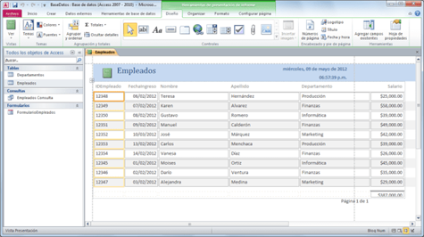

Diseño e implementación de base de datos
Informes
Pregunta Verdadero-Falso
Indica si es verdadera
Retroalimentación
Verdadero
Generalmente, se les da formato a los informes para imprimirlos, pero también pueden verse en pantalla, exportarse a otro programa o enviarse como datos adjuntos en un correo electrónico.
Obra publicada con Licencia Creative Commons Reconocimiento Compartir igual 4.0